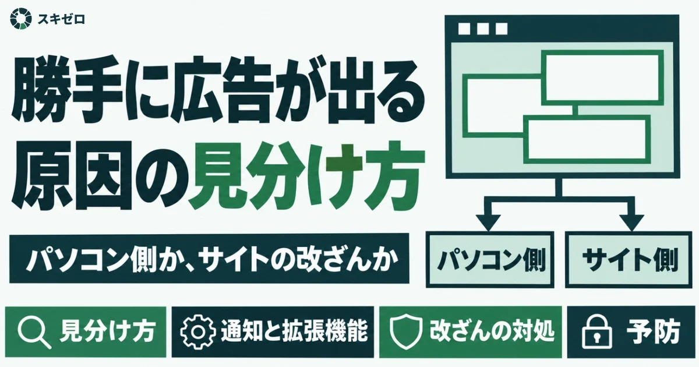
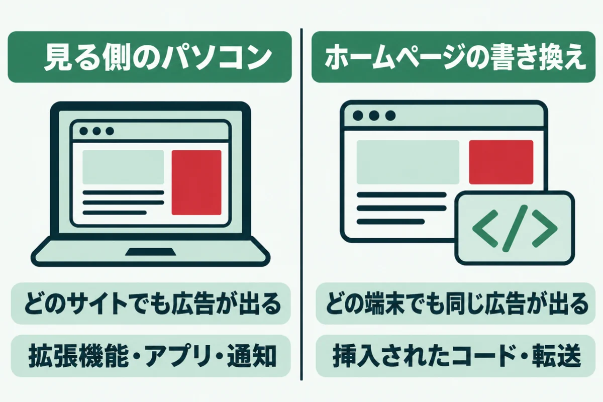
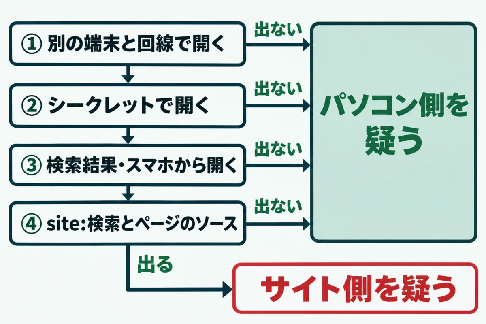
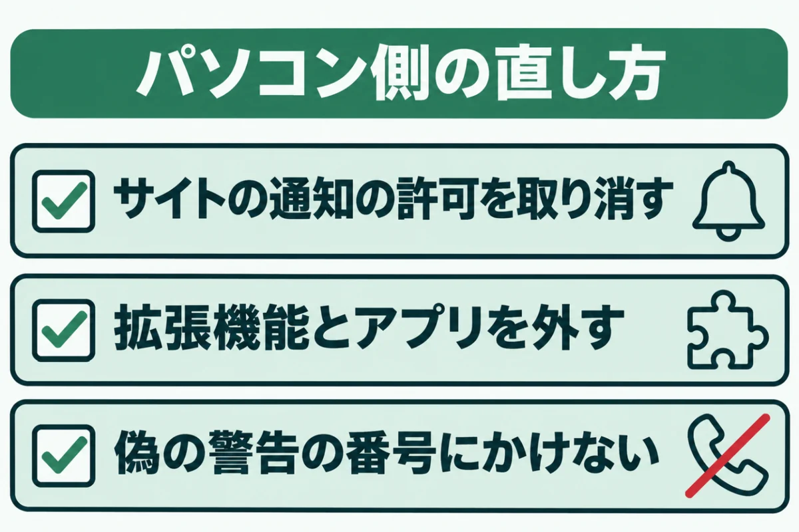
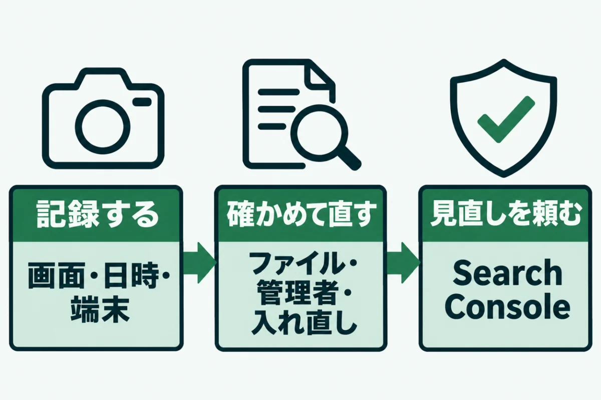
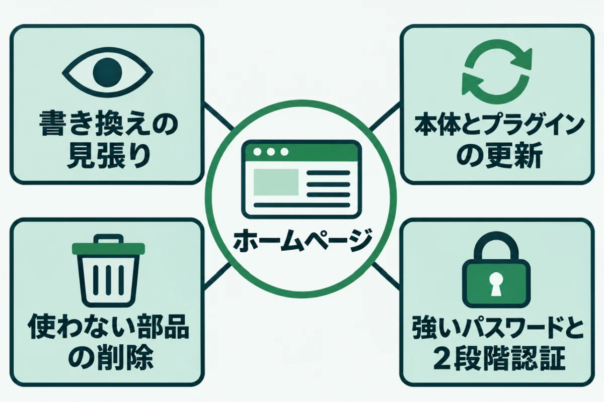

ホームページに勝手に変な広告やページが出る原因パソコン側かサイトの改ざんかを見分ける方法

「自分の会社のホームページを開いたら、見覚えのない広告が出てきた」と驚いていませんか？
勝手に出る広告には、見る側のパソコンが原因のものと、サイトが書き換えられたものがあります。原因によって、直す場所も連絡する相手もまったく違うのです。
この記事では、どちらが原因かを自分で見分ける方法と、それぞれの直し方を紹介します。あわせて、広告を入れられないための備えもまとめました。
もとにしたのは、Chromeのヘルプや、Google検索セントラル、IPAの公式の情報です。運営者の自社サイトの点検で分かったことも入れています。慌ててファイルを消す前に、まず順番に確かめていきましょう。
ホームページに勝手に広告が出る主な原因

勝手に広告が出る原因は、見る側の端末にある場合と、ホームページそのものにある場合の2つに分かれます。どちらかによって、直す場所はまったく違うのです。
見る側の原因なら、サイトのファイルを触っても広告は消えません。反対に、サイトが書き換えられていれば、訪れた人の多くに同じ広告が出てしまいます。自分で入れた広告や外部の部品が原因のこともあるので、3つの場合を順に見ていきましょう。
見る側のパソコンやスマホが原因の場合
Google Chromeのヘルプは、望ましくないソフトが入ったときの症状を挙げています。広告のポップアップや新しいタブが何度も開く、覚えのないページが勝手に開く、といったものです。ホームページや検索エンジンの設定が勝手に変わる場合も、同じ原因を疑います。
この場合は、どのサイトを開いても広告が出やすいのが特徴でしょう。原因は、無料ソフトと一緒に入ったアプリや、ブラウザの拡張機能です。サイトから届く通知を許可したことで、広告のような通知が出続けることもあります。
ホームページそのものが書き換えられた場合
Googleは、ハッキングされたサイトの手口として、既存のページへのコードの挿入を挙げているのです。悪い動きをするJavaScriptを書き込んだり、iframeで別のページを埋め込んだりします。
挿入されたコードが、広告や別のサイトへの転送を表示させるわけです。検索結果から開いたときやスマホのときだけ飛ばされることもあります。管理者が自分の画面で開いても、気づきにくい作りです。見覚えのないページを大量に作られる手口もあり、検索結果に知らない日本語のページが並ぶことがあります。
自分で入れた広告や外部の部品が原因の場合
3つ目は、自分で入れた広告や、外部のサービスの部品が原因の場合です。広告の配信サービスを使うと、表示される広告の中身は配信する側が決めます。そのため、意図しない広告が出ることもあるのです。
チャットや予約の窓口、計測のタグなど、外部から読み込む部品も、同じことがいえるでしょう。読み込み先が変わると、表示も変わります。使わなくなった部品のタグが残っていないかも見ておきましょう。どの部品を入れたかを一覧にしておくと、原因を早く絞り込めます。制作会社に任せている場合は、入れている部品の一覧をもらっておいてください。
ホームページに勝手に広告が出るとき、原因を見分ける4つの確かめ方

原因を見分けるには、開き方を変えて広告が出るかを比べます。別の端末でも出るなら、サイト側を疑いましょう。
確かめるときは、出た広告の画面を写真で残しておくと、あとで説明しやすくなります。表示された日時と、開いた端末とブラウザの名前も控えておいてください。次の4つは、どれも数分で試せる確かめ方です。上から順に試すと、早い段階で原因の見当がつきます。
① 別の端末と別の回線で開いてみる
最初に、ふだん使わない端末でホームページを開いてみます。会社のパソコンで広告が出たなら、自分のスマホのモバイル回線で開いてみてください。社内の別の人のパソコンでも試せると、より確かになります。
別の端末では出ないなら、最初のパソコンの側に原因がある見込みが高いでしょう。どの端末でも同じ広告が出るなら、サイト側の可能性が高まります。ただし、改ざんの中には一部の人にだけ広告を出すものもあるのです。1台で出なかっただけで安心せず、次の確かめ方も続けてください。
② シークレットウィンドウで拡張機能を外して開く
次に、同じパソコンのブラウザで、シークレットウィンドウを開いてサイトを見ます。Chromeのシークレットウィンドウでは、特に許可していない拡張機能は動きません。保存されたクッキーなども使われないため、ふだんの設定の影響を受けにくいのです。
シークレットウィンドウでは広告が消えるなら、拡張機能かブラウザの設定が原因と考えられます。同じ広告が出るなら、パソコンに入ったアプリかサイト側を疑いましょう。別のブラウザでも試すと、どこに原因があるかをさらに絞り込めます。
③ 検索結果から開いたときとスマホのときを試す
改ざんの中には、開き方によって動きを変えるものがあります。Googleの検索結果からリンクを押したときだけ、別のサイトに飛ばす手口です。URLを直接入れて開くと、ふつうのページが出るため気づきにくくなります。
そこで、検索結果からサイトを開く方法と、スマホで開く方法の両方を試しましょう。直接開くと正常なのに検索経由だけおかしい場合は、改ざんを強く疑います。お客さまから言われたときは、どの端末で、どこから開いたかを聞くと手がかりになるでしょう。
④ 検索とページの中身から見覚えのないものを探す
Googleで「site:自社のドメイン」と検索し、見覚えのないページが出ないかを見ます。知らない日本語の商品ページが並ぶのは、ページを大量に作られる改ざんの典型的な症状です。
パソコンのブラウザでページを右クリックし、ページのソースを表示する方法もあります。見覚えのない外部のスクリプトの読み込みがないかを探しましょう。Search Consoleを使っていれば「セキュリティの問題」も確かめてください。詳しい手順は、ホームページが改ざんされたかも？確認したい7つのサインと自分でできる確かめ方にまとめています。
パソコン側が原因でホームページに勝手に広告が出るときの直し方

パソコン側が原因と分かったら、サイトのファイルは触らずに、ブラウザとパソコンを見直します。直すのは見る側の端末だけで済むことが多いのです。
会社のパソコンなら、自分で消す前に社内の管理担当に伝えてください。ほかのパソコンにも同じソフトが入っていることがあるからです。次の3つを、上から順に見ていきます。どれも、パソコンに詳しくない人でも画面の案内に沿って進められるでしょう。
サイトの通知の許可を取り消す
ブラウザの右下などに広告のような通知が出続けるなら、サイトに通知を許可した可能性があります。動画やファイルを見るために「許可」を押させるサイトがあり、押すと通知が届き続けるのです。
Chromeでは、設定の「プライバシーとセキュリティ」を開きます。続けて「サイトの設定」から「通知」へ進みましょう。許可しているサイトの一覧から、覚えのないものを消します。ブロックの一覧に入れておけば、同じサイトからは届かなくなるのです。Chromeは、誤解を招く通知を出すサイトの通知を自動で止める仕組みも持っています。
拡張機能と覚えのないアプリを外す
次に、ブラウザの拡張機能の一覧を開き、入れた覚えのないものを外します。便利そうな名前でも、広告を差し込む拡張機能があるため、心当たりがなければ外して構いません。
あわせて、パソコンのアプリの一覧も見ましょう。Windowsなら、設定の「インストールされているアプリ」から外せるのです。外しても戻ってくるときは、別のアプリが入れ直していることがあります。Chromeの「設定のリセット」で、初めの状態に戻すのも1つの方法でしょう。そのあとで、信頼できる拡張機能だけを有効にし直してください。
偽の警告に出る電話番号にはかけない
広告の中には、ウイルスに感染したと告げる偽の警告もあります。IPAの安心相談窓口には、2026年7月から9月に3,369件の相談がありました。そのうち、偽のセキュリティ警告に関する相談は1,160件で、全体の34.4%です。
偽の警告は、音や点滅で不安をあおり、画面の電話番号にかけさせて有料のサポート契約に誘います。画面に出た番号には電話をかけないことが大切です。ブラウザを閉じれば消えることがほとんどで、閉じられないときはパソコンを再起動しましょう。
ホームページの改ざんで勝手に広告が出ているときの対処

どの端末でも広告が出るなら、ホームページの改ざんを前提に動きます。消す前に記録を残すことが、最初の一歩です。
広告のコードだけを消しても、入られた入口が残っていれば、また書き換えられてしまいます。総務省も、復旧のあとに原因を調べて再発を防ぐよう呼びかけているのです。自分で直すのが難しいときは、早めに制作会社やサーバー会社に相談してください。
画面と時刻を記録して管理者に知らせる
まず、広告が出た画面を写真で残し、日時と開いた端末、どこから開いたかをメモします。WordPressの公式の手引きも、症状と見つけた日時の記録を勧めているのです。直前に入れたプラグインや変えた設定も書き出しておきましょう。
記録がそろったら、サイトを管理している人とサーバー会社に知らせます。同じサーバーのほかのサイトに広がっていないかも、サーバー会社に確かめてもらえるでしょう。管理画面のパスワードは、ほかの入口とあわせてすべて変えてください。
書き換えられやすいファイルと管理者を確かめる
広告のコードは、.htaccessやindex.phpに入れられることが多いとされます。テーマのheader.phpやfooter.phpも、よく狙われる場所です。見慣れない長い文字列や、evalを使ったコードには注意しましょう。
あわせて、WordPressのユーザーの一覧に知らない管理者がいないかも確かめます。運営者の自社サイトの点検でも、心当たりのない編集者のアカウントが2つ見つかりました。本体とプラグインは、公式の配布物で入れ直すのが確実です。
直したら検索エンジンに見直しを頼む
Googleが危険なサイトと判断すると、検索結果やブラウザに警告が出ることがあります。直したら、Search Consoleの「セキュリティの問題」から審査を依頼しましょう。
審査には数日から数週間かかることがあり、その間も警告は残ります。直し終えてから依頼することが大切です。書き換えが残ったまま依頼すると、審査に通らず時間がかかるでしょう。復旧の全体の手順は、ホームページ改ざんの復旧手順｜発見から再発防止までをご覧ください。
ホームページに勝手に広告を入れられないための備え

広告を入れられる改ざんの多くは、古い部品や弱いパスワードから始まります。入口をふさぐ備えと、早く気づく備えの2つがあれば、被害を小さくできるでしょう。
総務省は、改ざんの原因の多くは高度な技術ではなく、基本的な対策の抜けだとしています。安易なパスワードや、直されないまま残った弱点が狙われるのです。どちらも、日ごろの見直しで防げる種類の抜けといえます。
入口になる古い部品とパスワードを見直す
まず、WordPressの本体とプラグイン、テーマを新しい版に保ちます。使っていないプラグインは、止めるだけでなく削除しておきましょう。運営者の自社サイトでも、配布が止まったまま残っていたプラグインを見つけて外しました。
パスワードは、サイトごとに長く別のものにします。管理画面には2段階認証を足しておくと、パスワードが漏れても入られにくくなるのです。サーバーの管理画面やFTPのパスワードも、同じように見直してください。外注先や退職した人のアカウントが残っていれば、この機会に整理しましょう。
書き換えに早く気づく仕組みを持つ
改ざんは、気づくのが遅れるほど被害が広がります。Search Consoleにサイトを登録すると、問題が見つかったときにメールで知らせが届くのです。
あわせて、ファイルの書き換えを知らせる仕組みや、定期的な点検を取り入れましょう。月に一度、別の端末で自分のサイトを開くだけでも、気づくきっかけになります。サーバー会社の自動バックアップの保存期間も、確かめておいてください。広告に気づいた日より前の、きれいな状態に戻せるかどうかが決まるからです。
URLを入れるだけで、WordPressやプラグインの版など8項目を無料で判定します。登録はいりません。
無料で診断するホームページに勝手に広告が出ることに関するよくある質問
自分のパソコンでだけ広告が出ます。サイトは大丈夫ですか？
ほかの端末やスマホで出ないなら、パソコンの側に原因がある見込みが高いです。ただし、改ざんの中には一部の人にだけ広告を出すものもあります。検索結果から開く方法とスマホで開く方法も、念のため試してください。そのうえで出なければ、パソコンの通知の許可と拡張機能、アプリを見直しましょう。会社のパソコンなら、ほかの人のパソコンも同じ状態でないか確かめておくと安心です。
お客さまから「変な広告が出る」と言われました。最初に何を聞けばいいですか？
まず、どの端末とブラウザで、どこから開いたかを聞きます。検索結果からか、ブックマークからかで、改ざんかどうかの見当が変わるからです。出た広告の画面の写真をもらえると、原因を絞り込みやすくなります。お客さまのパソコンが原因のこともあるため、決めつけずに確かめてください。社内の端末で同じ開き方を試し、出るかどうかを比べましょう。
出てきた広告を押してしまいました。どうすればいいですか？
押しただけなら、まずブラウザを閉じて様子を見ます。ファイルを保存したりアプリを入れたりしたら、パソコン全体をウイルス対策ソフトで検査してください。カード番号やパスワードを入力したときは、カード会社への連絡と、パスワードの変更を急ぎます。画面に出た電話番号には、かけないようにしましょう。不安なときは、IPAの情報セキュリティ安心相談窓口に相談できます。
改ざんで出る広告は、サイトを見た人にも害がありますか？
害が出ることがあります。広告から、偽の警告や、ウイルスを入れさせるページに飛ばされる場合があるからです。サイトを見たお客さまが被害にあうと、会社の信用にも響きます。改ざんに気づいたら、直すまでサイトを一時的に止めることも考えてください。お客さまへのお知らせが必要かどうかも、復旧の段取りとあわせて決めておくとよいでしょう。
無料の診断で、勝手に広告が出る原因は分かりますか？
スキゼロの無料簡易診断は、広告のコードが入っているかどうかを直接は調べません。調べるのは、WordPressやプラグインの版、ログイン名の見え方など外から見える8項目です。改ざんの入口になりやすい古い部品があるかを知る手がかりになります。すでに広告が出ている場合は、まず記事の手順で原因を見分けてください。そのうえで、入口が残っていないかを確かめる目的で使うのがおすすめです。
まとめ
ホームページに勝手に広告が出る原因は、見る側の端末か、ホームページそのものかに分かれます。別の端末や検索結果から開いて、どちらかを見分けましょう。
パソコン側なら通知と拡張機能、アプリを見直し、偽の警告の番号にはかけないでください。サイト側なら、記録を残してから直し、Search Consoleで見直しを頼みます。入口をふさぐ備えと、早く気づく仕組みを、日ごろから整えておきましょう。
まずは、今の状態を知るところから。
URLを入れるだけで、数十秒で判定が出ます。登録はいりません。